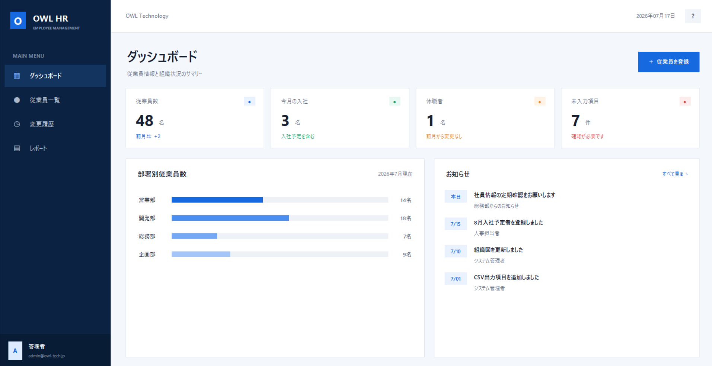

BUSINESS SOLUTION / DEMO GALLERY
サービスを、
実物でご紹介。
OWL Technologyが提供する業務システムとWebサイト制作を、実際に操作できるデモや制作サンプルでご確認いただけます。
DEMO LINEUP04 / SERVICES
Business Solutions
- OWL HR 従業員管理
- OWL Forms 業務改善
- OWL Flow ノーコード
- OWL Web サイト制作
ABOUT THIS PAGE営業資料「Business Solution Guide」でご紹介している各サービスの、操作感や完成イメージをご覧いただくための付帯ページです。
View demosDEMO LINEUP
4つのサービスデモ
用途に合わせて、実際の画面や制作事例をご覧ください。

01 / DOWNLOADABLE DEMO
OWL HRDesktop Mock
従業員管理システムを
実際に操作できます。
ダッシュボード、従業員検索、詳細表示、変更履歴、CSV出力を収録した営業デモ用モックです。サンプルデータで自由にお試しいただけます。
Windows版デモをダウンロードWindows 64bit専用 / EXE↓※ Windows 64bit専用の営業デモです。実在する従業員情報は含まれていません。
02 / LIVE WEB APPLICATION
OWL FormsWeb Application
Google Workspaceを活用した
業務改善システム
導入実績大手重工企業の社員食堂で導入
Googleフォームとスプレッドシートを活用し、入力・共有・集計をひとつにつなげる業務アプリのデモです。食堂のメニューと出数を日付ごとに確認できます。
OWL Formsデモを開くGoogle Apps Script Web Application↗※ デモの閲覧にはGoogleアカウントでのログインが必要です。
03 / LIVE NO-CODE APPLICATION
OWL FlowGlide App
ノーコードでつくる
業務アプリ
既存業務に合わせて、短期間で構築・改善できるノーコードアプリのデモです。物件・入居者情報と住居位置をひとつの詳細画面で確認できます。
OWL Flowデモを開くGlide / 不動産管理App↗04 / WEBSITE SAMPLES
OWL Web 制作サンプル
業種ごとに情報設計とデザインの方向性を変えています。
クリックすると実際のサイトが開きます。
OWL TECHNOLOGY
知識と技術を
より自由に。
目的やご予算に合わせて、必要な機能とデザインをご提案します。